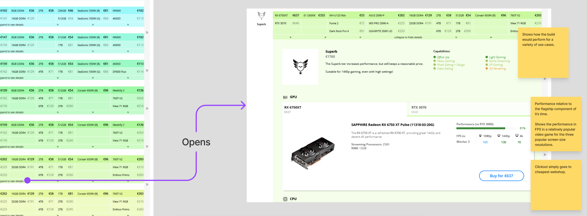

Overview
About Tweakers
Tweakers.net is a consumer electronics and technology-focused website, specializing in computers. Its revenue model relies on advertising and affiliate programs, including the Pricewatch, a prominent price comparison tool for electronics.
About the Product
I developed a tool for Tweakers designed to assist experienced users in building custom PCs. Integrated into the existing Pricewatch functionality, the tool provides insights into price-performance ratios, component information, ensures compatibility, and offers recommendations from the Tweakers editorial team.
My Role
As part of my graduation project, I independently managed the end-to-end design process for the PC Builder tool. My responsibilities included user research, stakeholder management, requirement definition, brainstorming, wireframing, creating a clickable prototype using HTML, CSS and Javascript, and validating the design with users.
Challenges
Designing a digital tool to assist experienced computer builders involved addressing compatibility issues, user preferences, and budget constraints. Identifying user needs and creating a tool that guides them in selecting the right components for custom PC builds posed a significant challenge.
Deliverables
A successfully tested clickable prototype of the PC Builder tool, along with conclusive recommendations for future implementations.
View the prototype here.
Research
My strategy included a competitive analysis, user interviews, and surveys to gather insights on existing solutions and understand user needs.

The insights gathered from a combination of user interviews and surveys shaped the following must-have requirements:
- Compatibility Check — The tool addresses the common issue of users, even experienced ones, overlooking incompatibilities during PC builds, potentially resulting in wasted time and money.
- Component Information — Users prioritize key information such as performance, price-performance ratio, user reviews, and specifications when selecting components.
- Recommendations — Acknowledging the reliance of users on recommendations, the tool offers valuable suggestions during the component selection process.
- Usability — The tool maintains clarity and user-friendliness, ensuring that users can easily navigate and access essential information throughout the process.
Ideation
During the ideation phase, I employed sketching and brainstorming techniques like Crazy Eight, for example to find effective ways to communicate the price-to-performance ratio to users. This led me to explore various solutions, eventually combining them into conceptual ideas to address the project requirements and to find the layout, form and positioning that works for Tweakers.

Continuously engaging with users and stakeholders at Tweakers validated previous design choices and revealed new insights that shaped the overall tool and its flow.
- User Journey — Users and the Tweakers editorial team demonstrated a strong preference for starting the component selection with the processor, motherboard, and graphics card, respectively.
- Positioning — Stakeholders also expressed a preference for hosting the tool on the Pricewatch page, emphasizing its integration with component browsing and pricing

Iteration
Having identified the concept that best aligned with user and stakeholder needs, I advanced to the next phase by translating my ideas into concrete designs. Taking my sketches to Figma, I initiated the wireframing process to visualize the initial structure of the PC Builder tool.

While sketching and wireframing I learned a lot about the challenges and constraints of the taken direction, such as the limited amount of space. Iterations focused on striking the right balance of the size of the elements and clarity, exploring ways to compactly yet effectively convey important component information. I also ensured that the design as a whole felt at home for Tweakers.

When the design was ready and all possible interactions were accounted for, I transitioned to turning these into a prototype using HTML, CSS and Javascript. Leveraging my technical skills to make a prototype that can handle various user scenarios during usability testing, making it feel like a real version of the tool.
Result

- Provides valuable insights into what users care most about when choosing components: performance and value metrics, key specifications and power consumption
- Safeguards users from potential mistakes by providing both feed forward and feedback during component choice, and guides user in resolving these issues or conflicts
- Integration with Tweakers' Pricewatch, leveraging its extensive filters and offering the cheapest available price alongside the tool
- Fill the tool with editorial recommendations at the click of a button, offering a good starting point for users or options to consider
- User-friendly and described as clear and easy to use during usability testing
Validation
After finalizing the design and prototype, I conducted comprehensive testing to refine the tool. Initial feedback from participants revealed areas for enhancement, such as providing feed forward for error prevention, as well as some low-hanging fruit regarding usability and discoverability.
The first iteration did a good job of giving the user feedback on their component choices; however, users truly missed feedforward as well—showing what components would be incompatible even before being picked.
Once these issues were addressed the tool was received well in the tests that followed and by the community, who at this stage had been given access to the prototype to gauge sentiment and gather feedback.

Future recommendations include A/B testing for clearer interactions, enhancing the visibility of recommendations, enabling list sharing, and displaying performance metrics in the Pricewatch list. These refinements aim to further elevate the tool's functionality and user engagement.
As a UX designer at Tweakers and the supervisor of the internship programme at the company, I would say that the PC Builder feature that Arthur designed and prototyped is complete and fulfils all requirements we set at the beginning of the project. The user journey is clear, there are helpful error messages and warnings along the way, components have clearly indicated empty and filled states, and the entire interaction has a clear end goal.
The success of the prototype I find is largely due to the rigorous research and testing process that Arthur applied to his project. The fact he designed and developed the tool iteratively, testing at each stage, meant that the decisions he took at each turn were validated and supported by solid qualitative and quantitative insights. The final evaluation of the prototype by the Tweakers community is a testament to this.
Lastly, the final version of the prototype Arthur leaves us with, and the list of next steps he has devised, together represent the first major milestone towards delivering the PC Builder feature to all Tweakers users. The handover is in fact so complete, that our development team is eager to get started on implementation before our product managers have even calculated its commercial viability.